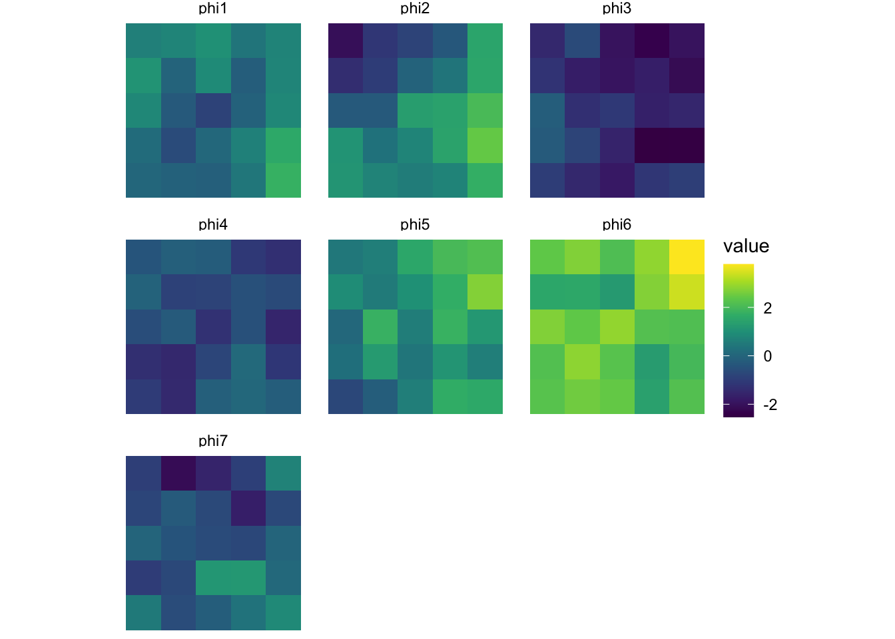

Code: Load the packages
library(tidyverse)
library(igraph)
library(viridis)We are going to examine the spatial CAR model in the context of the land surface phenology problem.
Consider a spatial domain \(\mathcal{D}\) partitioned into a regular lattice of areal units \(s \in \mathcal{D}\). Then, for a single year, each areal unit will have associated with it a “greenness” curve that is a description of that areal unit’s land surface phenology over the course of the year. The true greenness curve is the object of study. We observe the curve at only a finite number of points according to the capabilities of the collecting satellite. The goal is to recover this curve from these finite points.
We model this greenness curve with the so called “double-logistic” function, \(\nu(t,\boldsymbol\theta)\), a function of time that is parameterized by the vector \(\boldsymbol\theta = (\theta_1,\dots,\theta_p)\). Here, \(p = 7\). Note: link to previous post mentioning \(\nu\).
It is difficult to identify the double-logistic function best characterizing the greenness curve for a single site and single year in isolation due to a paucity of data. Such an approach also neglects the spatial dependence across sites in the domain.
Instead, we should draw information from other observations that are adjacent in either space or time (on a year-to-year scale).
For now, let’s consider modeling the spatial dependence. Fix ourselves to a snapshot in time, a single year, and consider the spatial domain \(\mathcal{D}\) described above. Suppose that in some earlier stage of the analysis, data was aggregated to allow for a estimate to be made for \(\boldsymbol\theta\) which we will refer to as \(\boldsymbol\theta_{\mathcal{D}}\). The result is a “region mean”.
In this example, we abstract away the data layer of the model and focus on the “deviation parameters”, \(\delta_{sj}\).
Recall that \(\delta_{sj}\) is a scalar parameter describing the deviation of the \(j\)th parameter at location \(s\) from the regional average model, \((\boldsymbol\theta_{\mathcal{D}})_j\). This is a product of the linearization of the double-logistic function with respect to \(\boldsymbol\theta\).
We will arrange these parameters into vectors in a few different ways. First, let \(\boldsymbol\delta_s\) be the \(p \times 1\) vector of parameters associated with location \(s \in \mathcal{D}\). Here \(\boldsymbol\delta_s\) describes the deviation of the entire phenology curve at location \(s\) from the regional average phenology curve. Next, let \(\boldsymbol\delta_{\cdot j}\) be the \(n \times 1\) vector of the \(j\)th parameter from \(\boldsymbol\delta_s\) for all \(s = 1,\dots,n\).
Let the spatial domain be a regular square lattice with \(n=25\) areal units.
n <- 5
nsites <- n^2
spat_domain <- expand.grid(x = 1:n, y = 1:n)
spat_domain$label <- 1:(n*n)
spat_domain_g <- make_lattice(c(n,n), mutual = TRUE)
W <- as.matrix(as_adjacency_matrix(spat_domain_g, sparse=1))
M <- diag(rowSums(W))
ggplot(spat_domain) +
geom_tile(aes(x, y), linewidth = 2, color = "grey50", fill="white") +
geom_text(aes(x, y, label=label), size = 15) +
coord_fixed() +
theme_void()First, we sample \(\boldsymbol\delta_{\cdot j}\) from a univariate CAR model for each \(j = 1,\dots,p\). Let \(\mathbf{W}\) be the proximity matrix defining the neighbor sites of each site, \(\mathbf{M}\) be a diagonal matrix where the diagonal contains the number of neighboring sites, \(\rho\) be a parameter controlling the strength of spatial association, and \(\tau^2_j\) be [insert interpretation]. Note that \(\rho\) is shared across the \(j\) elements and \(\tau^2_j\) is specific to the \(j\)th element of \(\boldsymbol\delta_s\).
\[ \boldsymbol\delta_{\cdot j} \sim \text{N}(\boldsymbol0, \tau_j^2(\mathbf{M}-\rho\mathbf{W})^{-1}) \]
This induces spatial dependence independently for each \(j\) element of \(\boldsymbol\delta_s\).
p <- 7
tau2 <- c(1,1,1,1,1,1,1)
rho <- 0.99
spat_re <- matrix(NA, nrow = nsites, ncol = p)
for (i in 1:p){
spat_prec <- (1/tau2[i])*(M-rho*W)
spat_domain[, ncol(spat_domain) + 1] <- backsolve(chol(spat_prec),
matrix(rnorm(nsites),
nrow = nsites))
colnames(spat_domain)[ncol(spat_domain)] <- paste0("phi", i)
}
spat_domain <- gather(spat_domain, key = "phi", value = "value", -c(x,y,label))
I’m thinking this might not be a great idea. . . shouldn’t we expect the spatial patterns to be related somehow? Yes, I think so. . , but I believe this will require either the matrix normal distribution or a very large kronecker product.